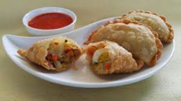

Jalangkote

Jalangkote adalah makanan ringan kuliner khas Makassar yang bentuknya serupa dengan kue pastel.
Bedanya kue pastel memiliki kulit yang lebih tebal dibandingkan jalangkote dan bila pastel dimakan bersama cabe rawit,
jalangkote dimakan bersama sambal cair campuran cuka dan cabe. Jalangkote memiliki isi wortel dan kentang yang dipotong dadu,
tauge, serta laksa yang ditumis dengan menggunakan bawang putih, bawang merah, merica, dan bumbu-bumbu lainnya.
Beberapa jalangkote menambahkan seperempat atau setengah telur rebus dan daging cincang untuk isinya.
Kulit jalangkote terbuat dari bahan dasar tepung terigu, telur, santan, mentega, dan garam.
Resep Jalangkote
~ Bahan Membuat Kulit Jalangkote:
~ Tepung terigu 200 gr
~ Telur ayam 1 butir
~ Santan 60 ml
~ Garam 1/2 sendok teh
~ Minyak goreng 750 ml
~ Bahan Untuk Isi Jalangkote
~ Wortel 75 gr dipotong berbentuk dadu
~ Kentang 75 gr dipotong berbentuk dadu
~ Daging sapi 100 gr dipotong kecil-kecil
~ Telur rebus 2 butir dibagi menjadi 6 bagian
~ Taoge 50 gr siangi
~ Soun 25 gr rendam air hingga lunak
~ Bawang perai 1 btg diiris tipis-tipis
~ Air 25 ml
Bahan Bumbu Jalangkote:
~ Bawang putih 3 siung diiris tipis-tipis
~ Bawang merah 4 siung diiris tipis-tipis
~ Merica bubuk 1/2 sendok teh
~ Pala bubuk 1/4 sendok teh
~ Kaldu bubuk (Ayam/Sapi) secukupnya
~ Garam secukupnya
~ Gula pasir secukupnya
~ Bahan Membuat Sambel Jalangkote
~ Cabai merah 4 buah
~ Cabai rawit 2 buah
~ Bawang putih 4 siung
~ Bawang merah 3 siung
~ Garam secukupnya
~ Cuka 1/2 sendok teh
~ Gula pasir 1 sendok teh
~ Air 200 ml
Langkah-Langkah Membuat Isi Jalangkote:
~ Panaskan minyak 2 sendok makan, masukkan bawang putih dan bawang merah lalu tumis hingga harum.
~ Masukkan bawang perai, daging sapi, wortel dan kentang. Lalu tuangkan air dan masak hingga setengah masak.
~ Masukkan bahan-bahan lainnya (kecuali telur) lalu berikan garam, merica, pala bubuk, gula pasir.
~ Kemudian masak hinggga semua bahan matang. Angkat dan sisihkan.
Langkah-Langkah Membuat Kulit Jalangkote:
~ Masukkan tepung terigu dalam tempat adonan.
~ Tambahkan telur, garam dan santan. Lalu aduk sampai merata.
~ Masukkan 50 ml minyak goreng panas, kemudian uleni adonan hingga kalis.
~ Setelah adonan kalis, gilas adonan hingga setebal 3 mm, cetak dengan bentuk bulat dengan diameter 10 cm.
~ Ambil satu lembar kulit, masukkan 2 sendok makan isian yang telah di buat tadi dan 1 potong telur di atasnya.
~ Tutup dan rekatkan kulit membentuk setengah lingkaran, untuk menempelkan antar bagian gunakan putih telur.
~ Lakukan kembali pada semua adonan.
~ Goreng menggunakan minyak panas, goreng hingga berwarna kecoklatan.
Langkah-Langkah Membuat Sambel:
~ Haluskan semua bahan saus yang telah disiapkan (kecuali air dan cuka).
~ Panaskan 2 sendok makan minyak, tumis sampai matang. Lalu angkat.
~ Rebus air, lalu masukkan bumbu tumis dan cuka. Masak sampai matang dan angkat.
~ Hidangkan jalangkote dan sambel, lebih nikmat dimakan saat masih panas.
Sumber: Wikipedia, maxnyoos.com